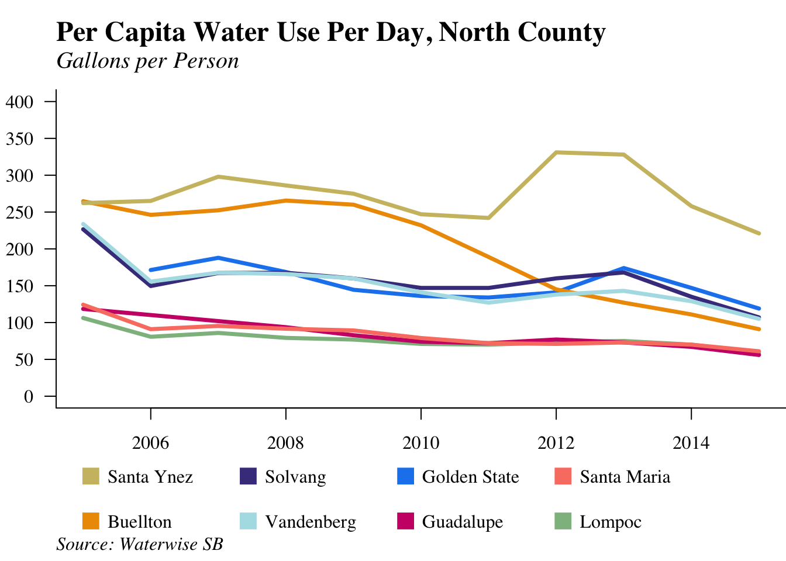
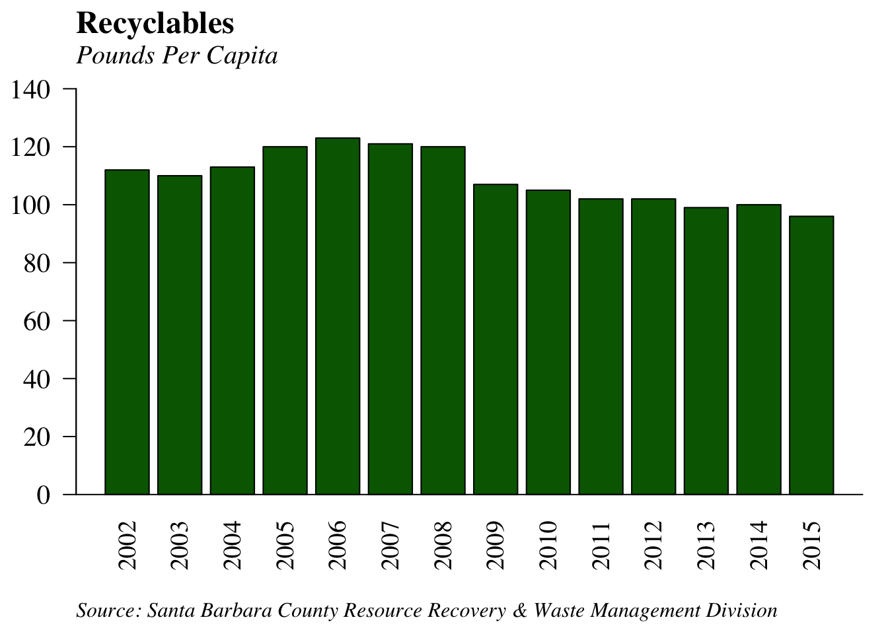

Environmental
Water Quality
Water Quality Violation Days Relatively Stable
#=====================================================================================
# Ocean Water Quality
#=====================================================================================

What are the measures?
The percentage of weekly water quality tests that exceed state and federal standards for fecal coliform and enterococcus. This data is from the County Ocean Water Monitoring Program, which tests ocean water near the mouth of most major creeks in the Santa Barbara County. A reading of more than 400 parts per million for fecal coliform, 104 for enterococcus, or 10,000 MPN (Most Probable Number, meaning the bacterial count per 100 mL of water) for total coliform exceeds state and federal standards, and can lead to a Department of Environmental Health Beach Advisory.
Why are they important?
The quality of water coming out of a watershed directly reflects what goes into the watershed and is an indicator of the watershed’s overall health. This not only affects the ability of residents to enjoy local creeks and beaches, but also affects the health of wildlife. In addition, unsafe beaches can adversely impact the local economy by reducing tourism.
How are we doing?
Less than twelve percent of tests each year had results where bacteria exceeded state and federal standards since 2012. Water quality violation days remained relatively stable from 2013-2018, but 2019, saw a jump in both enteroccus and fecal coliform.The amount of rainfall can significantly affect these results, as rainfall flushes bacteria and pollutants from the creeks into the ocean.
Water Consumption Declines
What is the measure?
The gallons of water consumed per day for residential purposes by the customers of all the principal water agencies within Santa Barbara County.
Why is it important?
The amount of water consumed by residents of Santa Barbara County is especially important in times of drought conditions. The County has taken several steps to reduce residential water consumption, which appears to have had a positive effect on lowering overall water usage.
How are we doing?
California’s longest drought since 2000 occurred from 2011-2019. During that time, countywide water consumption declined, with marked decreases beginning in 2013. Montecito, Santa Ynez, and La Cumbre continue to have the highest per capita consumption of water out of the County. Guadalupe, Santa Maria, Lompoc, Goleta, Carpinteria, and Santa Barbara have the lowest per capita water consumption in the county, with levels remaining relatively stable throughout our data.

Air Quality
Ozone Violation Days Significantly Reduced
What is the measure?
The number of days in which local communities did not meet the state standard for ozone levels. If a daily ozone reading exceeds an hourly average of 0.09 parts per million, or an eight hour average of 0.07 parts per million, a state “violation day” occurs.
Why is it important?
Ozone – one of the primary components of smog – impairs normal functioning of the lungs and reduces the ability to perform physical exercise. Lack of ozone in the air is considered to be a good indicator of overall air quality.
How are we doing?
In 2016, Santa Barbara County only experienced three days of ozone violation where the air quality exceeded the state 8-hour standard. While this is an increase of one day from 2015 statistics, air quality has improved dramatically over the past twenty years, even despite an overall rise in population. In October 2015, the EPA passed a new federal mandate reducing the 8-hour ozone violation from 0.075 parts per million to 0.070 parts per million. Most recently, Santa Barbara County only had one violation day in 2019.
Particulate Matter Levels Increase
What are the measures?
The number of days each year that Santa Barbara County exceeded state and federal standards for PM10 and PM2.5 levels. This data comes from the Santa Barbara County Air Pollution Control District.
Why are they important?
Particulate matter is made up of fine particles in the air, such as those of dust, smoke, metal, and soot that can be harmful to humans’ lungs when inhaled. This pollutant is split up into two categories, PM10 and PM2.5. PM10 includes particles less than 10 microns in diameter and PM2.5 refers to much smaller particles that are no more than 2.5 microns in diameter. Because PM2.5 is much smaller, it can become lodged in the deepest parts of your lungs much more easily, making it a serious health threat, especially to people with respiratory diseases such as asthma and bronchitis. PM2.5 is caused primarily by vehicle emissions, burning of fuel, and wildfires. When PM2.5 is in the air there is much more caution that is necessary; when PM2.5 levels are high, people should limit outdoor exposure and exercising as much as possible. Additionally, if levels are particularly high or if one must go outside, it is beneficial to wear a mask with a filter.
How are we doing?
We almost never see PM2.5 exceedance days, but in 2017 there were 13. Why is this? The Thomas Fire is one event that could be responsible for this spike. The largest wildfire in California history at the time, this fire led to hazy skies for many days, with health officials urging people to wear masks outside of their homes in order to prevent respiratory irritation from smoke and ash in the air. In 2020, we had 10 PM2.5 exceedance days. All of these occurred between July and October, which correlates to wildfire season in California. Being that 2020 was the largest wildfire season to date, it makes sense to see this second spike in PM2.5 exceedance days.
No Businesses Created a Significant Health Risk in 2020
What is the measure?
The number of businesses in Santa Barbara County that release airborne toxic contaminants which exceed the Santa Barbara County Air Pollution Control District’s thresholds for significant health risks. Three categories of toxic chemicals are measured – those that pose cancer risks, those that pose acute health risks, and those that pose chronic health risks unrelated to cancer.
Why is it important?
Toxic air contaminants pose a direct threat to the health of people who work at businesses that exceed safety thresholds and to those who live or work immediately adjacent to those businesses. In addition, the toxic contaminants harm overall air quality in Santa Barbara County.
How are we doing?
The number of businesses exceeding health risk thresholds dropped to zero in 2015 and has stayed at zero for the past five years. This is even more significant when stricter changes in guidelines are taken into account; in 2015, the Office of Environmental Health Hazard Assessment revised the guidance manual to account for sensitivity to cancer at early ages, possibly resulting in increased risk results.
Land Use
Pesticide Use is on the Decline
What is the measure?
The total pounds of pesticides used for both agricultural and non-agricultural reasons throughout Santa Barbara County.
Why is it important?
Pesticides are most commonly used in agriculture to prevent crop loss due to insects and diseases. Outside of agriculture, pesticides can also be used to limit household pests, such as rats and other rodents. Many activities involving pesticides can affect ground and groundwater quality, most of which are difficult to track. Agricultural pesticide use is one possible precursor to ground or groundwater contamination. Impacts on natural environmental processes can in turn lead to adverse health effects for humans. About 70% of all pesticide use in Santa Barbara County is within North County.
How are we doing?
After a large spike in pesticide use in 2012 – amounting to 6.18 million pounds – overall use declined significantly in 2013. While there was a small spike in 2016 of 5.24 million pounds, levels have declined since then to a level of 4.55 million pounds in 2018. The lowest level of pesticide usage was observed in 2009, with only 3.73 million pounds.
Strawberries Dominate Pesticide Use Sites
What is the measure?
The top five sites of pesticide use throughout Santa Barbara County in 2018. This data comes from the California Department of Pesticide Regulation.
Why is it important?
Countywide pesticide use totaled 4,547,073 pounds in 2018. Five types of crops constituted about 82 percent of this total pesticide use including strawberries, grapes and wine, carrots, lemons, and flowers. These crops may be located in specific agricultural areas where pesticide use becomes more concentrated.
How are we doing?
The strawberry crop is the leading site for pesticide use in Santa Barbara County, with 2,058,058 pounds of pesticides used in 2018. This is about 45% of total pesticide use throughout the county.
Energy Use Decreases
What is the measure?
The amount of electricity consumed by the Santa Barbara County for commercial, residential, and industrial purposes, measured in gigawatt hours. (One gigawatt hour equals one thousand megawatt hours.)
Why is it important?
Electric energy is a critical commodity, integrated into every aspect of our lives in our homes and workplaces. However, the production of electricity may have negative environmental impacts through pollution and resource use.
How are we doing?
Santa Barbara County energy use contines to decrease, dropping to its lowest consumption levels in over ten years.
Mobility
Most Workers Commute Alone by Car
What is the measure?
The respective percentages of Santa Barbara County residents’ means of transport to work. This data is collected by the United States Census in the American Community Survey.
Why is it important?
Mobility reflects the ability of people to get from one place to another efficiently; consequentially, traffic congestion prevents this from happening. While traffic congestion has many components – including the level of non-commuter automobile use, population, the success of land-use planning, and the ability of infrastructure improvements to adapt to changes – the level of single occupancy vehicle use has a direct impact on overall traffic congestion.
How are we doing?
The majority of workers choose to commute alone by car. The proportion of these commuters has remained stable over the past five years.
Mean Commute Time Rises Marginally
What is the measure?
The average amount of time it takes a commuter in Santa Barbara County to travel to work.
Why is it important?
Commute distances traveled can reveal much about quality of life and future trends. Changing commute patterns may indicate a greater sensitivity toward housing costs and the economy. As the distance traveled increases, so does pollution, emission levels from automobiles, and traffic congestion.
How are we doing?
The average commute time in 2019 was 20.5 minutes. Since 2005, the average commute time for residents in Santa Barbara County has stayed relatively consistent within the range of 18.5-20.5 mins.
Bus Ridership Decreasing
What is the measure?
The number of bus trips taken in Santa Barbara on Metropolitan Transit District (MTD) buses.
Why is it important?
Buses are popular means of alternative transportation in Santa Barbara. In many cases, they are the transportation mode of choice for those who cannot afford an automobile or are unable to drive.
How are we doing?
Since 2012, the number of bus trips has been declining. Most recently, total bus trips taken in the county has dropped to about 6.3 million in 2018, the lowest ridership levels in our data. Levels peaked in 2009 with 8.3 million rides that year.
Traffic Volumes Remain Stable
What is the measure?
The number of cars per day on the freeway counted at three interchanges in Santa Barbara County. The interchanges are Highway 101 at Fairview, Las Positas, and Sheffield.
Why is it important?
Highway 101 is a major roadway in Santa Barbara County, carrying local traffic, commuters from outside of the area, tourists, and other traffic. As the major traffic artery in the area, this highway plays an important role in the mobility of local residents.
How are we doing?
Since 2012, traffic volume has stayed relatively stable. While Fairview saw a small increase in traffic volume between 2016 and 2017, Sheffield and Las Positas saw a slight decline.
Resource Use
Total Waste Disposed Sees Slight Increase
What are the measures?
The total tons of waste disposed in the Tajiguas, Santa Maria, and Lompoc landfills, as well as the amount of green waste and recycling diverted from the landfills.
Why is it important?
Waste disposal is a major form of urban pollution. Growing populations cause the total amount of waste to increase. Changes in the local economy, consumer purchasing decisions, and recycling and composting efforts also affect the amount of waste.
How are we doing?
Since 2014, the total waste disposed in the Santa Maria landfill has been steadily increasing, totaling 125,188 pounds in 2018. Similarly, the Tajiguas landfill (which serves most of the South Coast) has seen a large upward tick in total waste disposed; since 2014, total waste has increased from 175,099 pounds to 239,004 pounds in 2018. Conversely, the Lompoc landfill has seen relatively steady waste disposal levels.
California had a statewide goal of reducing solid waste by 75 percent by 2020 through recycling, composting and source reduction. 2020 saw the highest levels of green waste per capita, with 197 pounds. One possible reason for this is that people spent more time gardening and renovating residential outdoor spaces during the Covid-19 stay-at-home orders. Recycling levels have remained relatively stable since 2015, except for a decrease in 2018 to 88 pounds per capita, the lowest level in our data.

Nature
Total Bird Count Decreases in 2019
What is the measure?
The results of the Audubon Society’s annual Christmas Bird Count for five species. The bird count is designed as a measure of the diversity of bird species, but it can also be used as a rough indicator of how well bird species are thriving.
Five common species are reported - the California Quail, the Nuttall’s Woodpecker, the American Crow, the Wrentit, and the Western Meadowlark. All of these species are resident birds, living in different local habitats.
Why is it important?
Bird populations are an important part of our local ecosystem, and generally reflect its overall health. Changes in the bird count can indicate changes in habitats or other shifts in the local environment. Decreased sightings of these local bird species are likely due to the loss of local chaparral and woodlands.
How are we doing?
The American Crow is consistently the species with the most sightings each year; 2007 saw the largest counts, with 2,643 sightings. There was a 36 percent overall increase from 2005 to 2015, but since then sightings have generally decreased, with only 1,670 sightings in 2019.
In 2015, Western Meadowlark sightings fell dramatically from 720 to 376, a 47 percent decline. This decrease is surprising considering the 129 percent increase seen from 2013 to 2014. Most recently in 2019, the number of sightings was only 243.
Similar to the Western Meadowlarks, the number of California Quails also fell by 26 percent moving from 2014 to 2015 after increasing considerably the years before. Even though 2017 had the most California Quail sightings in our data with 284, sightings decreased shortly after to just 134 in 2019.
Wrentit sightings have typically stayed between the range of 100-200 sightings since 2003, except for a particularly low count of 79 in 2005. Most recently, sightings have seen an increase from 102 in 2016 to 147 in 2019.
Nuttall’s Woodpecker is always the least common species to be reported; the lowest number ever reported was 17 in 2005 and the most sightings was in 2013 with just 84 sightings.